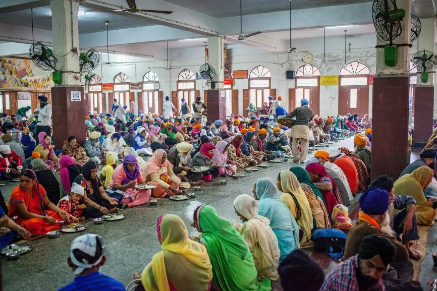

Take Action
Volunteer Action

Food Drives (Langar System)
Langars are community kitchen services, where food is prepared and served to common people, especially the poor and needy. They are usually run using charity and donations made by people and are mostly associated with religious places.
Facts and Data
828 million people on Earth go hungry every day, about 10% of the global population
45% of child deaths under five are linked to hunger and its related causes.
9 million people die from hunger-causes annually, more than AIDS, malaria and TB combined.
149 million children suffer from stunted growth and development due to malnutrition.